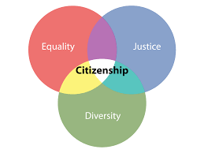

| Quality | Definition |
|---|---|
| Honesty | the quality of being honest or truthful |
| Compassion | sympathetic pity and concern for the sufferings or misfortunes of others |
| Respect | the feeling of deep admiration for someone or something elicited by their abilities, qualities, or achievements |
| Responsibility | the state of fact of having a duty to deal with something or of having control over someone |
| Courage | the ability to do something that frightes one or strenght in the face of pain/grief |
All defintions are from:
If one were a good citizen they would be someone who is honest, compassionate, respectful, responsable and couragous. These qualities help people lead others and/or help each other. Another quality a citizen should have would be being truthful. This helps make the world a better place when people tell the truth. An example of an act of kindness would be when a girl who was 11-years-old finished her mile run for her schools gym class and then went and ran/cheered on a boy who was the only one who still hadn't finished.
